dicas de decoração imperdíveis para sua Casa
A escolha dos seus estilos de decoração prediletos pode influenciar em uma reforma ou até na escolha de um novo lar. Conheça quais são os principais para tomar boas decisões.
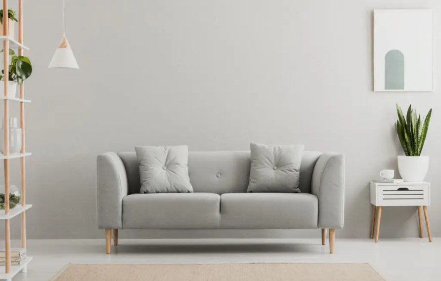
Conhecer os principais estilos de decoração é uma etapa muito importante para um imóvel se tornar um lar. Afinal, é trazendo objetos que escolhemos que tornamos um espaço vazio em lugar de aconchego e pronto para vivermos momentos especiais.
O Censo QuintoAndar reforça essa importância: para 95% das pessoas brasileiras, a casa é o seu lugar favorito. Inclusive para reunir pessoas queridas, pois 76% sinalizaram que gostam de receber os amigos em casa.
Para viver e receber bem no seu lugar predileto, a decoração faz a sua parte. Afinal, é colocando itens que tem a ver com o seu jeito que aquele sentimento bom de se sentir em casa acontece.
O primeiro passo para isso está aqui: conhecer os principais estilos de decoração e, assim, encontrar os seus prediletos. Aproveite o nosso guia a seguir.
Navegue pelo conteúdo:
Principais estilos de decoração
Neste guia, vamos te mostrar os principais estilos de decoração de interiores. Isso porque há uma gama grande e, com as novas tendências que surgem a cada dia, novos estilos podem surgir a partir de outros – como você vai observar a seguir.
Inclusive, se sentiu falta de algum, conta pra gente nos comentários que a gente traz para você!
Decoração Minimalista
“Menos é mais”. Esta é a máxima do estilo de decoração minimalista. E esse conceito costuma orientar tudo o que diz respeito a esse tipo de decoração, desde a escolha das cores – geralmente neutras, como branco, preto e cinza – até a quantidade de móveis e objetos que irão figurar no ambiente.
Exagero é palavra proibida no minimalismo. E o interessante desse tipo de proposta é que especialmente os itens escolhidos deixem o ambiente funcional. Nessa linha, móveis multifuncionais são sempre bem-vindos. Ou seja, que possuam mais de uma utilidade.
Além disso, a organização e a limpeza são fatores primordiais. Uma vez que um ambiente minimalista tem poucos elementos, é muito fácil perceber quando algo está fora da ordem.
Veja algumas inspirações de decoração minimalista:
Exemplo de sala minimalista que soube aproveitar bem os tons de cinza na decoração.
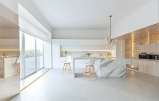Exemplo de cozinha minimalista com amplos espaços de circulação.
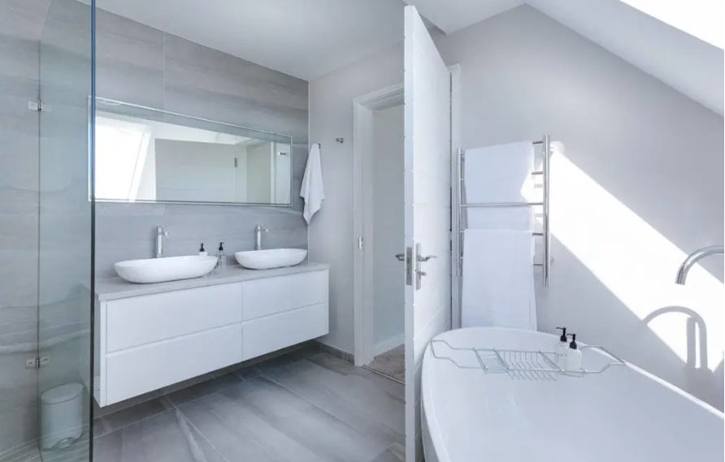 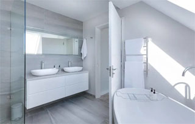Nesta inspiração de banheiro com decoração minimalista o uso da cor branca ajuda a reforçar o aspecto de leveza do ambiente.
Decoração Maximalista
No lado oposto ao minimalismo, está o estilo de decoração maximalista. Seus lemas são: “quanto mais, melhor” (ditado popular) e “menos é chato” (Robert Venturi).
Assim, é a decoração ideal para a sua casa se você acha que o conforto vem das cores, da mistura de elementos diferentes e de objetos que remetem a boas histórias.
As principais características do estilo maximalista são:
Criatividade: perceptível tanto na ousadia das cores escolhidas para o ambiente, como nos itens decorativos e também no uso de elementos com texturas diferentes; Mistura: aqui vale apostar na mistura de tendências e estilos. Assim, o maximalismo agrega outras formas de decoração como o boho, o moderno, o retrô, entre outros. Harmonia: ainda que haja muitos elementos decorativos diferentes, eles ornam entre si, formando um lindo mosaico. Personalidade: um ambiente maximalista é único, pois tem o jeito de quem mora nele, traduzindo seu estilo de viver. Veja algumas inspirações de decoração maximalista:
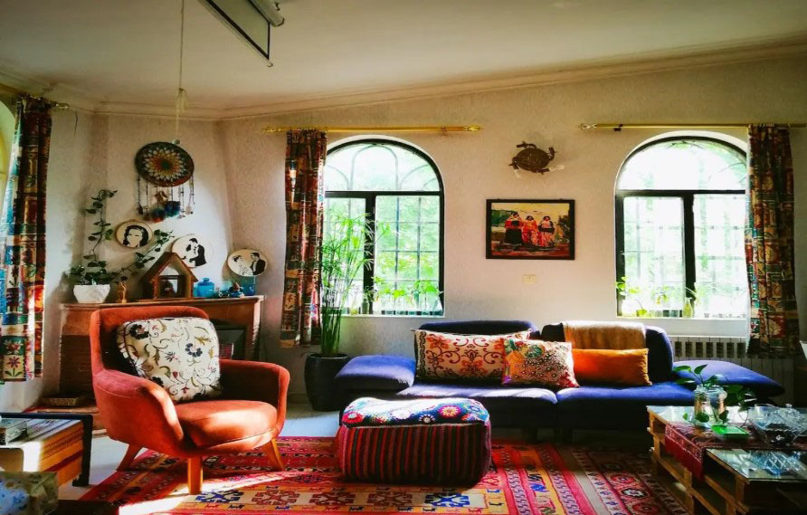A decoração maximalista é movida a muitas cores, como nesta inspiração da foto.
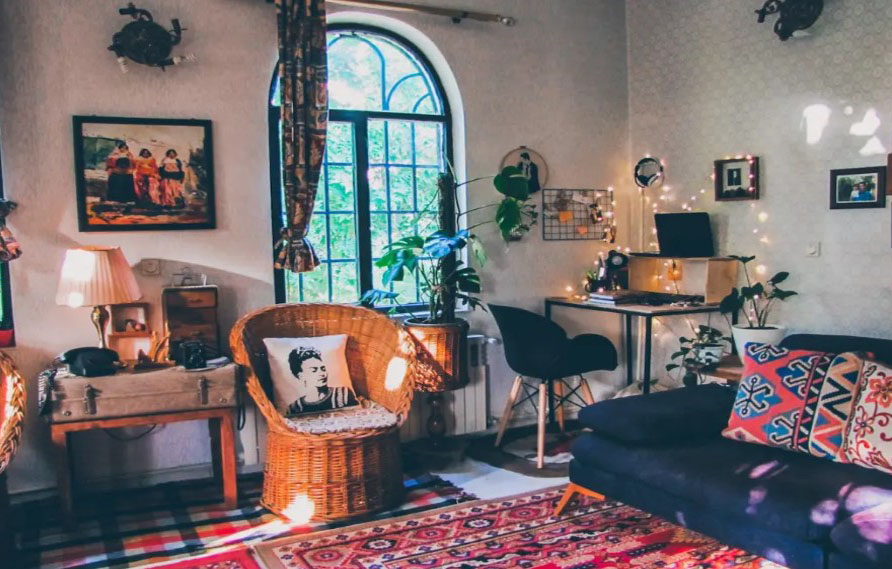 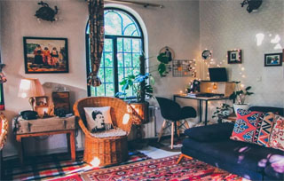Já nesta inspiração de decoração maximalista há cores mais sóbrias misturadas com outras mais vívidas, o que também é uma ótima ideia.
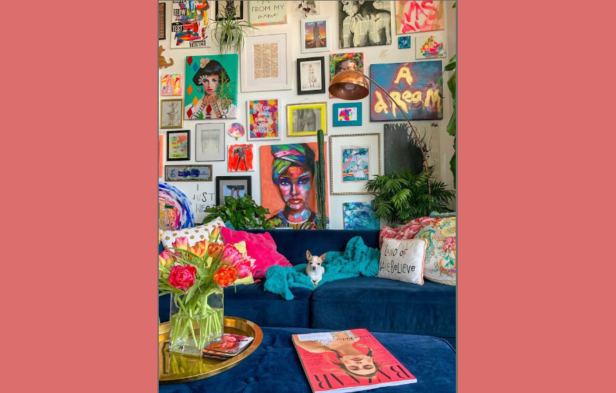 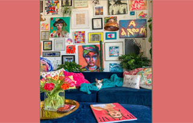Um jeito simples de fazer uma decoração no estilo do maximalismo é montar uma parede com muitos quadros coloridos, como no exemplo da foto.
Decoração Escandinava
É um dos estilos de decoração que apostam na simplicidade, um conceito muito comum nos países nórdicos. Por ser originário de regiões onde os dias de inverno são muito curtos em termos de luminosidade natural, a decoração escandinava busca deixar os ambientes mais claros, geralmente com o branco como cor predominante nas paredes.
Além disso, a decoração escandinava costuma trabalhar com o conforto e o aconchego, sem deixar de lado a simplicidade, ao adicionar ao branco das paredes elementos com tons de verde, cinza ou de madeira clara que podem estar presentes em móveis, mantas ou tapetes.
Veja abaixo alguns exemplos de ambientes decorados com o estilo escandinavo:
 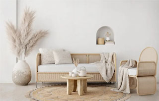
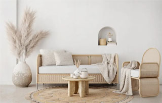
Incluir mantas na decoração escandinava ajuda a trazer mais conforto ao ambiente.
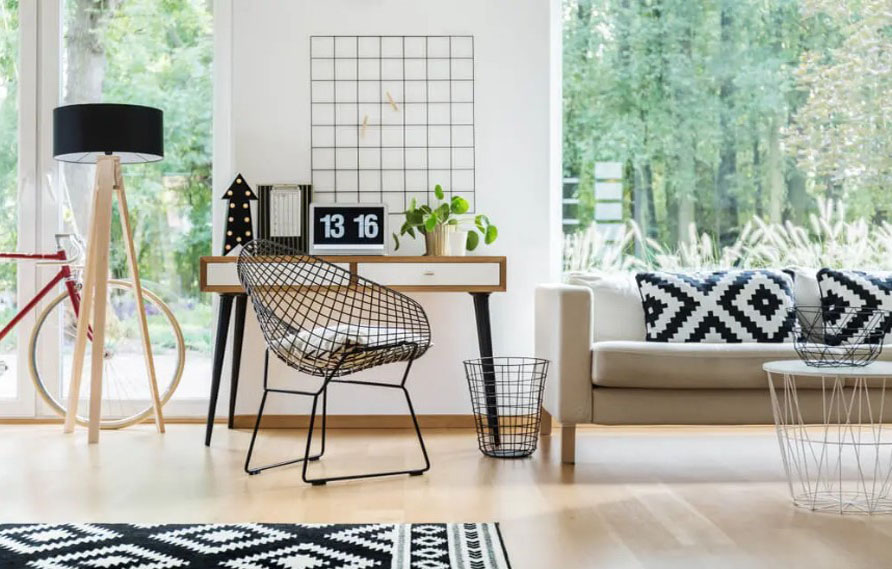 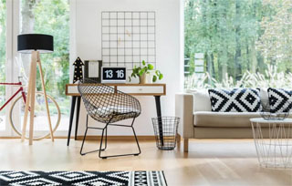Sala de estar escandinava onde foram usados tons de preto e branco em elementos decorativos para agregar mais personalidade ao ambiente.
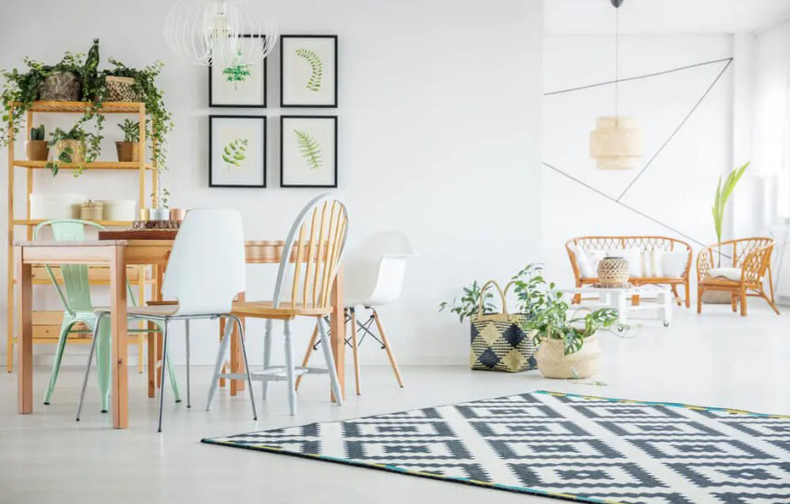Decoração escandinava em sala de estar e jantar integradas.
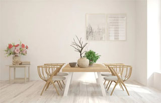Sala de jantar em estilo escandinavo onde cada elemento foi bem escolhido para montar a decoração
Decoração Japandi
Fruto da mistura entre o estilo escandinavo e o design japonês, surgiu a decoração japandi. A mistura gera ambientes elegantes, delicados e que trazem uma sensação de aconchego.
Justamente por isso, por agregar esse conforto bom à casa, é que esse estilo ficou famoso durante o período de isolamento social. Afinal, foi o momento em que mais estivemos dentro de casa e, assim, entendemos a importância de nos sentirmos confortáveis onde vivemos.
Entre as principais caracterísitcas da decoração japandi, destaque para: Cores sóbrias e/ou claras; Poucos elementos, o que, inclusive, remete ao minimalismo; Formas e linhas simples; Simplicidade nas linhas e formas; Uso de materiais mais naturais e rústicos. Veja algumas inspirações de decoração japandi:
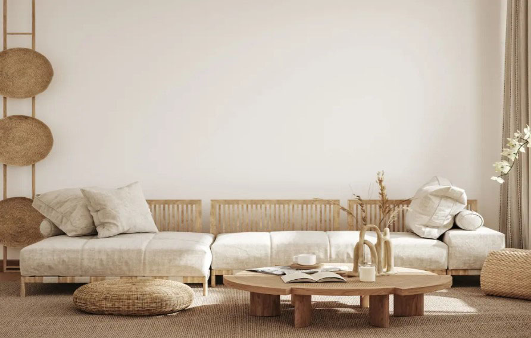Nesta inspiração de sala com decoração japandi deu-se preferência ao uso de materiais rústicos e naturais.
 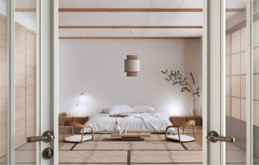
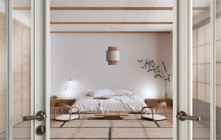
O uso de formas e linhas simples agregou mais estilo a este quarto com decoração japandi.
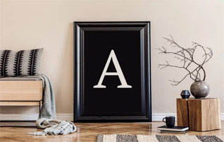Exemplo de elementos que fazem parte da decoração japandi.
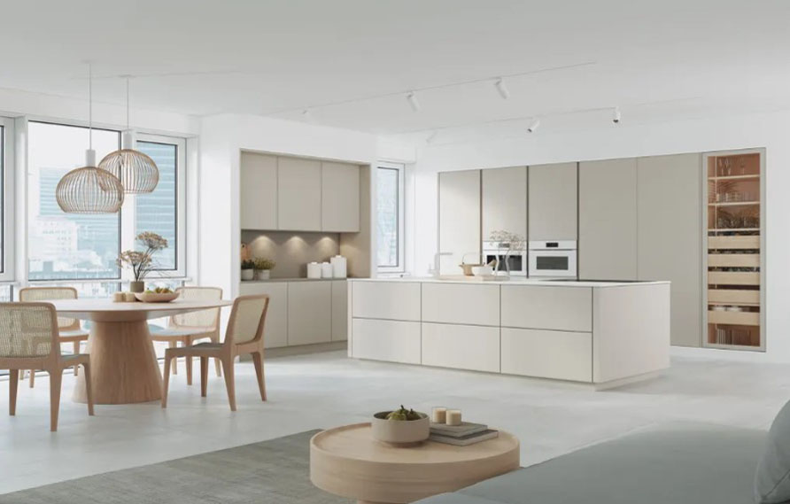Exemplo de cozinha com sala de jantar que optou pela decoração japandi.
Decoração Industrial
Na década de 1970, a cidade de Nova York lançou para o mundo a tendência da decoração industrial em residências, a partir de um movimento em que as pessoas começaram a encontrar alternativas para moradia em galpões antigos, fábricas velhas ou lofts. E muitos dos elementos já presentes nesses tipos de ambientes industriais foram mantidos como forma de decoração, dando origem ao estilo.
Tanto no mobiliário quanto na iluminação e, principalmente, nos revestimentos, a decoração industrial se caracteriza por elementos que, a princípio, podem parecer pesados e rústicos, como:
Piso de cimento queimado; Parede de tijolos aparentes; Tubulações de ferro aparentes; Cores sóbrias e neutras, em especial o preto e o cinza. Mas se usados com equilíbrio, esses elementos deixam qualquer ambiente elegante.
Inspire-se com alguns exemplos de decoração industrial:
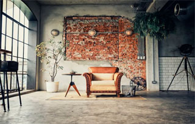Nesta inspiração há os principais elementos da decoração industrial reunidos.
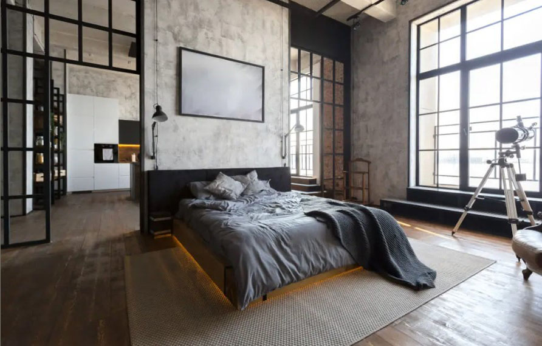Quarto com decoração industrial onde o conceito aberto, típico dos antigos galpões, foi bem aproveitado.
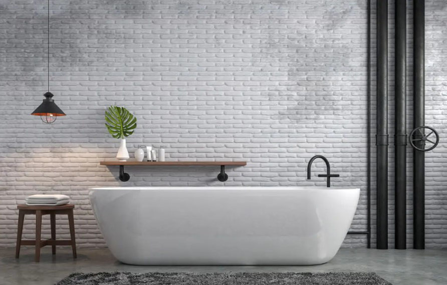 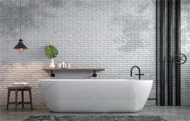Inspiração de banheiro em estilo industrial onde as tubulações de ferro aparente foram bem harmonizadas com os demais elementos.
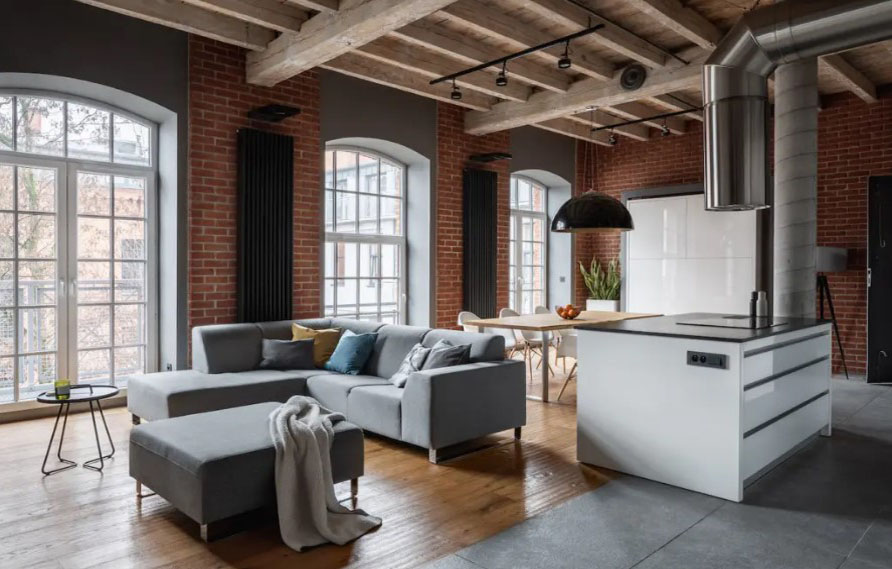 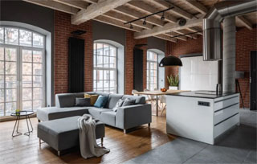A união de diferentes ambientes é bem comum no estilo de decoração industrial, como nessa foto onde a sala de jantar e a sala de estar estão juntas.
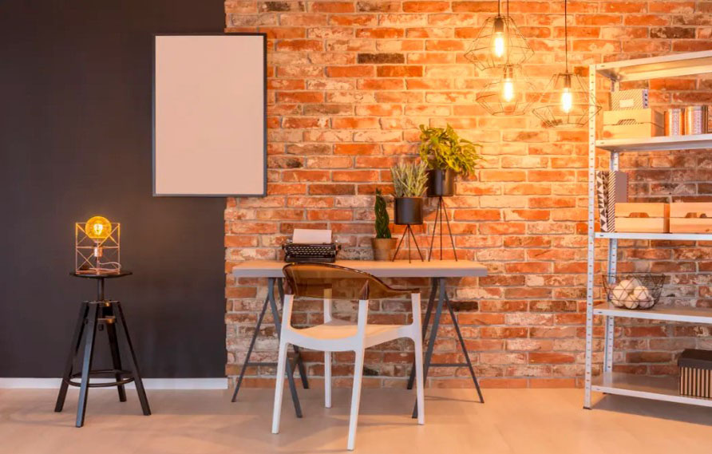 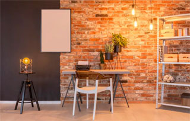A parede de tijolos aparentes é uma característica bem marcante dos ambientes com decoração industrial.
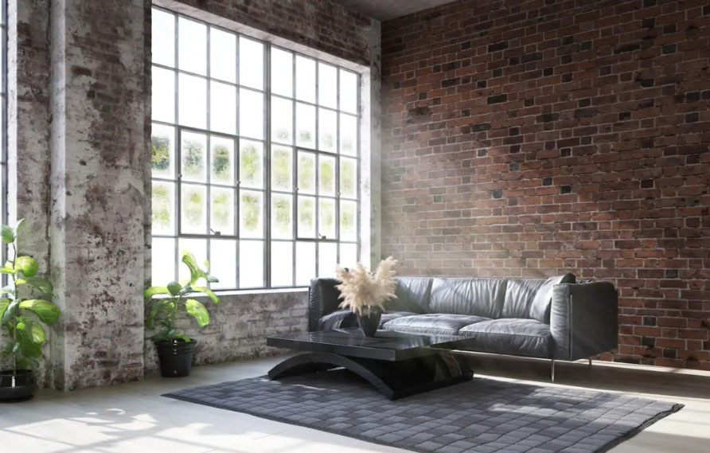Exemplo de sala de estar com decoração industrial onde tons mais escuros foram bem utilizados.
Decoração Rústica
Entende-se por rústico algo que esteja relacionado a ambientes rurais ou ligados à natureza. E é justamente nessa linha que vai esse tipo de decoração.
O estilo de decoração rústica aposta introduzir nos ambientes, mesmo que seja de um apartamento no centro de uma metrópole, elementos que remetem ao campo, com formas não polidas e com texturas diferentes.
Em pisos, revestimentos, móveis e objetos de decoração, aproveite materiais que ajudam a compor uma decoração rústica como:
Pedras;
Tijolos aparentes;
Muita madeira;
Couro e diferentes tipos de materiais naturais.
Mas tudo com o intuito de proporcionar o conforto e o aconchego típicos de uma casa no campo.
Veja abaixo alguns exemplos de decoração rústica:
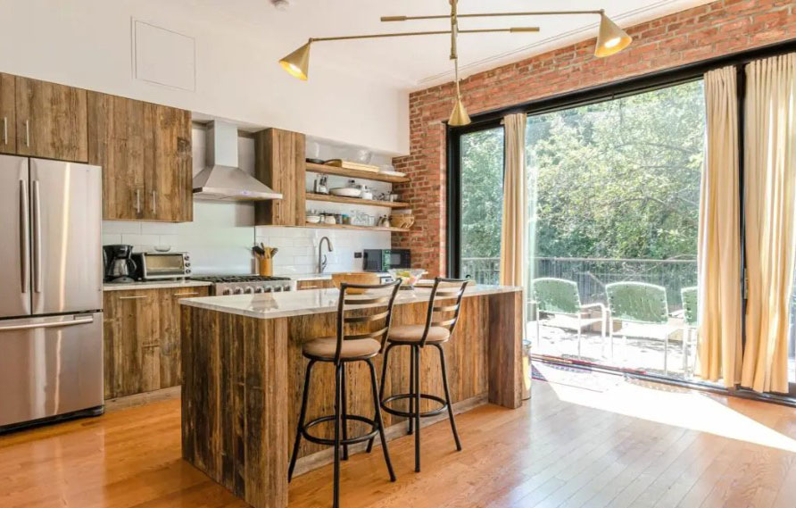 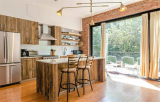Ao usar a madeira de diferentes formas, esta cozinha ganhou um ar rústico.
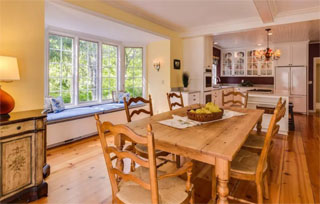Estilo rústico em sala de jantar integrada com cozinha.
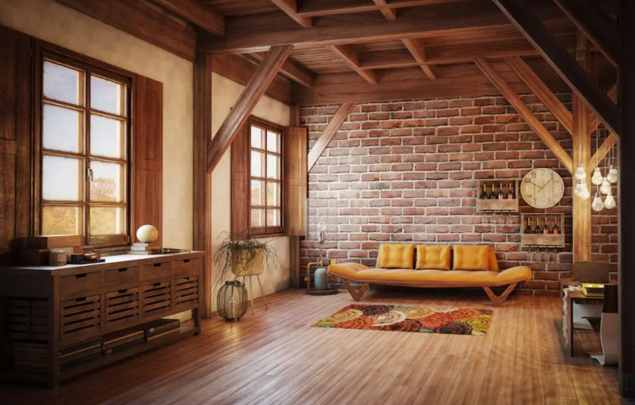 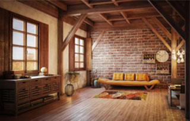Harmonizar diferentes elementos feitos em materiais naturais, como foi feito nesta inspiração da foto, é uma das características da decoração rústica.
Decoração Clássica
O estilo clássico remete a decorações antigas, com inspiração em propriedades de nobres ou de monarcas de séculos passados. Assim, preza por beleza, elegância e sofisticação.
É um estilo que conta com itens volumosos e cheios de detalhes em seu mobiliário, como grandes lustres, móveis de madeira e couro, além de tecidos pesados e de altíssima qualidade em cortinas, sofás e estofados em geral.
Para conversar com esses tipos de elementos de mobília e objetos de decoração, as paredes costumam ter tons mais sóbrios, como bege, rosa claro, marrom, branco e até mesmo preto.
Dessa forma, no estilo de decoração clássica, a busca é sempre pelo requinte.
Veja algumas inspirações de decoração clássica:
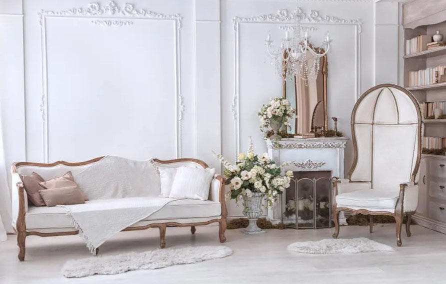 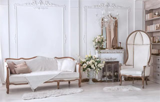Inspiração de sala de estar com estilo clássico onde o requinte se sobressai.
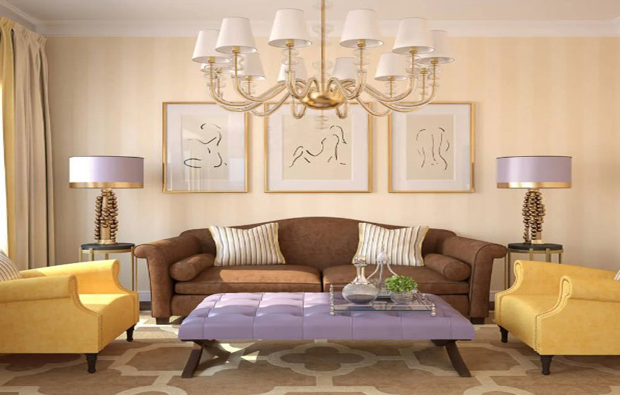 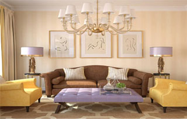Nesta inspiração, há elementos clássicos nos lustres, abajures e nos tecidos do sofá e das almofadas
Decoração Retrô
Para quem busca uma decoração que seja autêntica e, ao mesmo tempo, aconchegante, a decoração retrô pode ser a ideal.
Ela foi pensada a partir da releitura do passado, principalmente das décadas de de 1950, 60, 70 e 80. Assim, esse estilo de decoração aproveita o design de épocas anteriores ao mesmo tempo que usa a tecnologia e os materiais da atualidade. Ou seja, é uma decoração que preza por peças atuais inspiradas no que já passou.
Assim, a nostalgia do passado agrega conforto e, por outro lado, a tecnologia traz praticidade. Uma mistura perfeita para ambientes como a cozinha, por exemplo.
Os elementos principais da decoração retrô são:
Placas decorativas Móveis com pés de palito Cores vibrantes Papel de parede floral ou geométrico Luminária de chão Varal de luzes Itens de memória afetiva Para você conhecer melhor esse estilo, trouxemos inspirações de ambientes retrôs:
 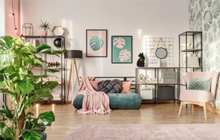
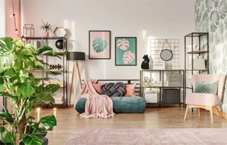
Nesta sala com decoração retrô, o papel de parede floral harmoniza bem com os demais elementos em rosa, verde e preto do ambiente.
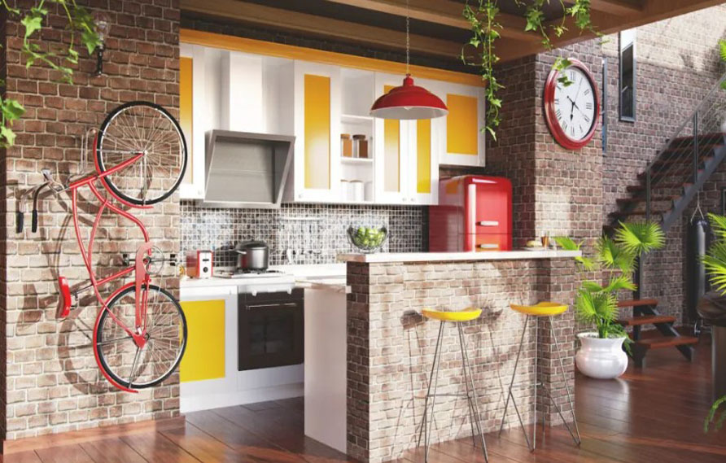Uma cozinha americana também pode ser retrô, como mostra a inspiração da foto.
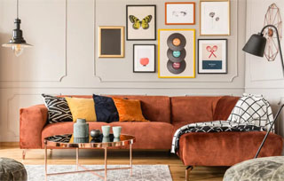Essa foto é para te mostrar que a sala de estar combina super bem com o estilo retrô.
Decoração Vintage
Vizinha da retrô, a decoração vintage tem suas particularidades e diferenças. Ainda que sejam estilos de decoração bem parecidos, no vintage há uma predominância do antigo, de apreciar o que vem de antes. Ou seja, o famoso “quanto mais velho, melhor”, afinal, a palavra veio, justamente, da enologia onde significa “ano de boa colheita”.
Dessa forma, vintage é a valorização do que é antigo e de excelente qualidade – como um vinho de uma boa colheita que foi envelhecido corretamente.
Para uma decoração ser vintage, é preciso usar objetos e móveis antigos, com pelo menos 20 anos de fabricação e até 90 anos. Isso porque itens com mais de 100 anos são considerados antiguidade. Ainda que objetos das décadas de 1980 e 90 também façam parte do chamado novo vintage.
Mas atenção a um detalhe importante: ainda que recuperados ou restaurados, tais objetos não podem ter passado por nenhum processo de modernização em seu estilo.
As sensações de aconchego e personalidade ficam evidentes em cômodos no estilo vintage. Afinal, esse tipo de decoração aproveita da forte conexão entre passado e presente, agregando uma memória afetiva bem forte para quem mora no lugar. Além de trazer todo o charme de peças garimpadas para dentro de casa.
Confira boas inspirações de decoração vintage:
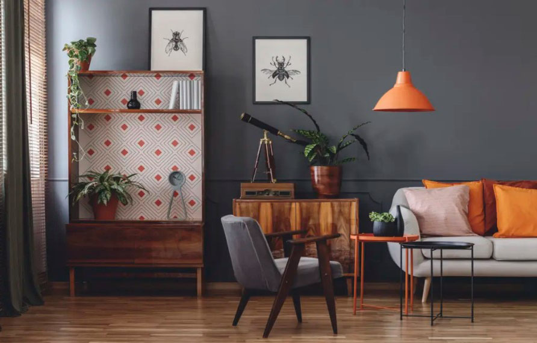 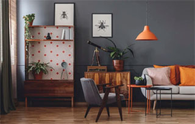Essa sala de estar no estilo vintage misturou tons escuros com um laranja, dando uma personalidade a mais ao ambiente.
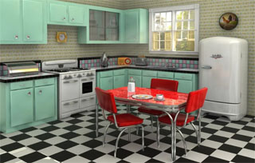Exemplo de cozinha vintage mesclando cores como o vermelho e verde claro com o típico chão xadrez.
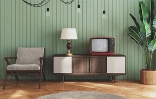Você pode começar montando um cantinho vintage na sua casa, como mostra essa inspiração da foto.
Decoração Moderna
A decoração moderna, apesar do nome, é um estilo já antigo – e que, portanto, não deve ser confundido com algo futurista –, que data da primeira metade do século XX e surgiu como uma espécie de contraponto da opulência no estilo clássico.
Além de pregar a simplicidade – com muita ênfase em linhas retas horizontais, verticais e diagonais e curvas inseridas pontualmente –, essa tendência prima por um design funcional e simples, em que itens utilitários, ou seja, com uma função no ambiente, como cadeiras, mesas, poltronas, também são peças decorativas.
O estilo bebe na fonte do modernismo, movimento filosófico, artístico e intelectual, que no Brasil teve o seu ápice na realização da Semana de Arte Moderna, em 1922.
Dessa forma, entendendo melhor o estilo e também com as referências a seguir, fica mais evidente o quanto uma decoração moderna não é, necessariamente, futurista ou até mesmo geek. Uma vez que esse estilo está mais ligado a uma filosofia de simplicidade e funcionalidade do que com o uso de equipamentos tecnológicos em si.
Confira algumas inspirações de decoração moderna:
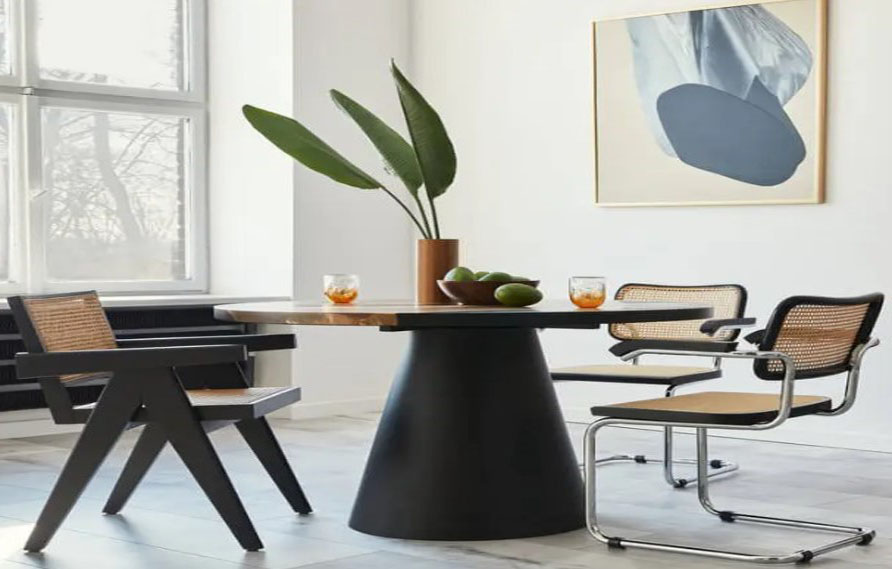Toques modernos nos móveis desta sala de jantar dão um toque especial ao ambiente.
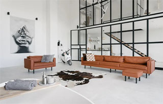Sala de estar com decoração moderna que soube aproveitar bem o amplo espaço disponível.
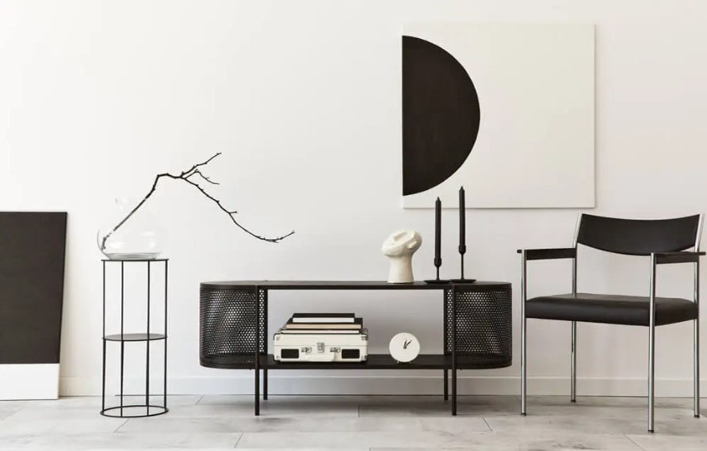 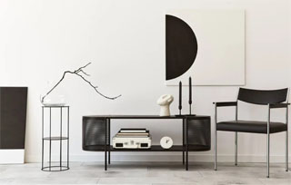Muitos elementos modernos no mobiliário dessa sala de estar, que além de terem sua funcionalidade, também são decorativos.
Estilo Contemporâneo
Muito moderno e clean, esse tipo de decoração privilegia superfícies lisas, com linhas retas e um mobiliário funcional, aproximando-se do minimalismo, porém com menos preocupação em deixar espaços vazios, e também da decoração moderna.
Por ser contemporâneo, é um estilo que está sempre ligado às tendências do momento. E, portanto, em constante transformação.
Atualmente, aposta em tons neutros – branco, cinza, marrom ou bege –, iluminação farta, mobiliário com linhas finas e retas, privilegiando formas geométricas.
Veja alguns exemplos de ambientes decorados com o estilo contemporâneo:
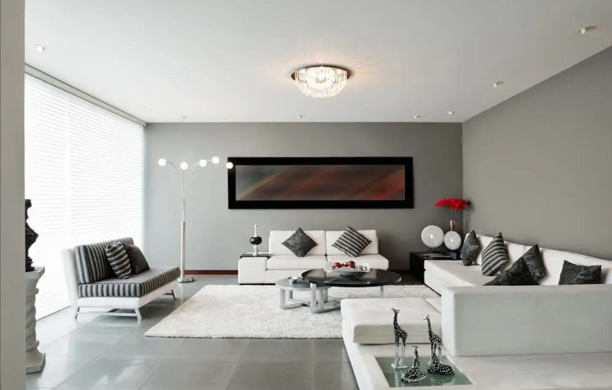 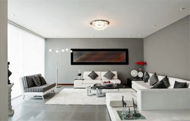Exemplo que mostra o charme de uma sala de estar com decoração contemporânea.
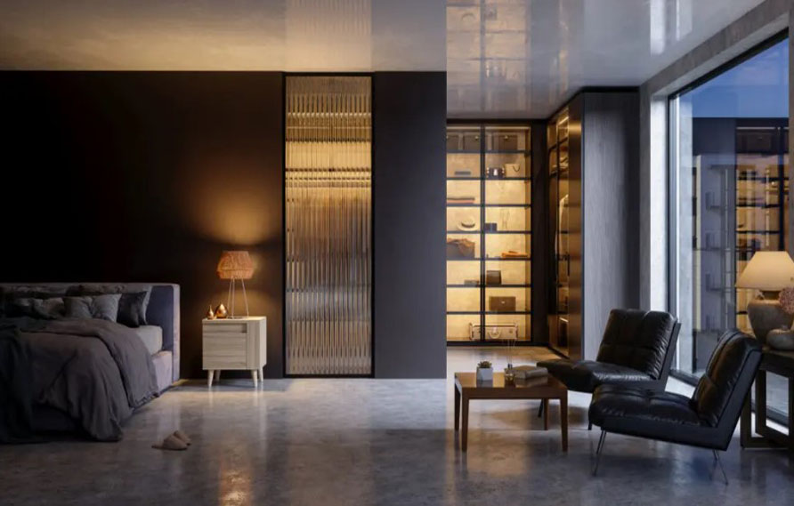Inspiração de quarto com decoração contemporânea que soube montar uma linda iluminação.
Decoração Boho
Chegamos agora a um dos estilos de decoração de interiores mais charmosos, o boho. Nele, os ambientes valorizam o uso de peças artesanais e a mistura entre cores e texturas.
Famoso no mundo da moda, ele é reconhecido pelo uso da diversidade de elementos mantendo a plena harmonia. Para isso, a dica é fazer uma mistura equilibrada entre as peças, montando uma atmosfera elegante que é meio hippie, mas ao mesmo tempo meio vintage no ambiente.
A seguir, trouxemos bons exemplos de ambientes no estilo boho:
Seu cantinho de trabalho pode ter uma linda decoração boho, como neste exemplo da foto.

Um quarto pode ser bem aconchegante, como este exemplo da imagem, ao aderir à decoração boho.
Já neste quarto de solteiro, a decoração boho foi mais leve e delicada.
Qual estilo de decoração combina com você?
Agora que você já conhece os principais tipos de decoração, consegue avaliar qual tem mais a ver com o seu estilo e/ou modo de viver.

Novo Echo Dot 5ª geração
Novo Echo Dot 5ª geração | O Echo Dot com o melhor som já lançado | Som vibrante e potente em um dispositivo compacto | Cor Preta


Celular Xiaomi Redmi Note 12
Celular Xiaomi Redmi Note 12 128GB / 6GB RAM/Dual Sim/TelaP e 13MP - Onyx Gray - Preto

Fire TV Stick | Streaming em Full
Fire TV Stick | Streaming em Full HD com Alexa | Com Controle Remoto por Voz com Alexa (inclui comandos de TV)

Apresentamos o Echo Pop
Apresentamos o Echo Pop | Smart speaker compacto com som envolvente e Alexa | Cor Preta Apresentamos o Echo Pop

Balança Digital de Cozinha
Balança Digital de Cozinha, SF-400, Até 10 kg, Escala 1 grama

Liquidificador Turbo
Liquidificador Turbo Power, Mondial, Preto, 550W, 110V - L-99 FB

Faqueiro em Aço Inox Búzios com 24 Peças
Faqueiro em Aço Inox Búzios com 24 Peças

Sanduicheira Minigrill 750w Preta Multilaser 127v - Ce043
Sanduicheira Minigrill 750w Preta Multilaser 127v - Ce043

Fritadeira Sem Óleo Air Fryer 5L
Fritadeira Sem Óleo Air Fryer 5L, Mondial, Preto/Inox, 1900W, 110V - AFN-50-BI

Oster OLIQ610 1400 Full
Oster OLIQ610 1400 Full - Liquidificador, 3,2L, 110V, 1400W, Preto

Apoquel 5,4Mg, 20Compr Zoetis Para Cães
Apoquel 5,4Mg, 20Compr Zoetis Para Cães

Tapete Higiênico Confort
Tapete Higiênico Confort Pads 60x55 com 30 Unidades

MY PET BRASIL - Brinquedo Para Cachorro
MY PET BRASIL - Brinquedo Para Cachorro, Bola Cravinho, Brinquedo Mordedor, Bolinha Para Cães,1 Unidade, Cores sortidas

Tapete Higiênico Chalesco
Tapete Higiênico Chalesco Premium para Cães com 30 unidades

Tênis Olympikus ELECTRA/159 feminino
Tênis Olympikus ELECTRA/159 feminino

Mochila de viagem grande feminina
Mochila de viagem grande feminina, mochila de mão, mochila de caminhada impermeável para esportes ao ar livre mochila casual mochila escolar

Tênis Esportivo Masculino Aquarios Preto Chumbo Olympikus
Tênis Esportivo Masculino Aquarios Preto Chumbo Olympikus

Limpa Máquina de Lavar Roupas Electrolux - 2 unidades
Limpa Máquina de Lavar Roupas Electrolux - 2 unidades

Chamalux Ultra Chama - Cooktop 4 bocas, Bivolt, Preto
Chamalux Ultra Chama - Cooktop 4 bocas, Bivolt, Preto

Lavadora Lavamax Eco 10 Kg Branca 220V
Lavadora Lavamax Eco 10 Kg Branca 220V - SUGGAR - LE1002BR

Máquina de Lavar 11kg Electrolux
Máquina de Lavar 11kg Electrolux Essential Care Silenciosa com Easy Clean e Filtro Fiapos (LES11)

WAP Parafusadeira E Furadeira A Bateria
WAP Parafusadeira E Furadeira A Bateria Li-Ion 12V Bpf 12K3 Carregador Bivolt Sem Fio Com Maleta E Kit De 13 Acessórios

Extensão Slim 3 Tomadas Bipolar
Extensão Slim 3 Tomadas Bipolar Bivolt 1 Metro Branco - Force Line

Bosch Kit De Pontas E Brocas
Bosch Kit De Pontas E Brocas X-Line 33 Pçs

Aspirador de Pó e Líquidos WAP
Aspirador de Pó e Líquidos WAP GTW 10 Filtro Lavável 1400W 220 Volts - Capacidade de 10 litros e Mangueira de 1,5 metros